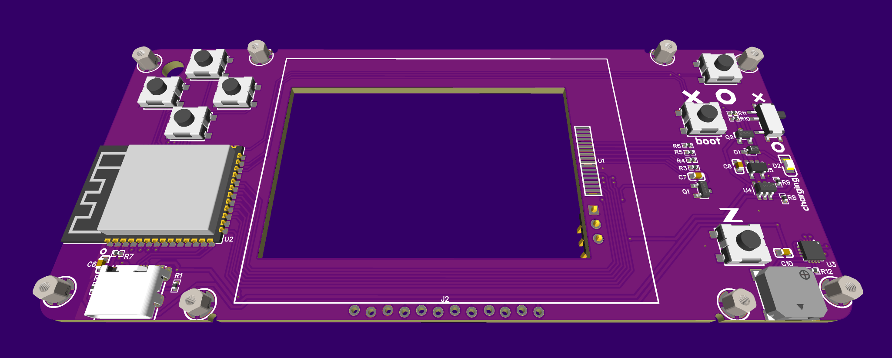
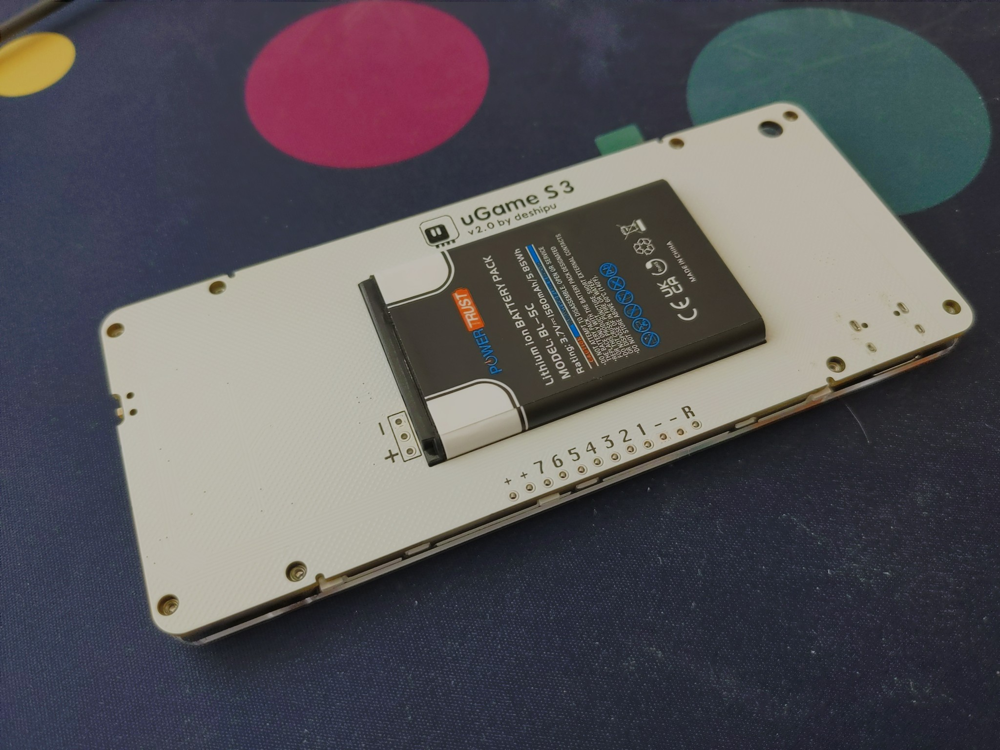
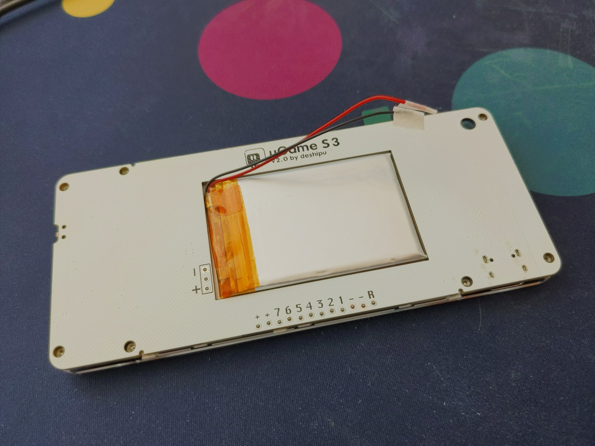
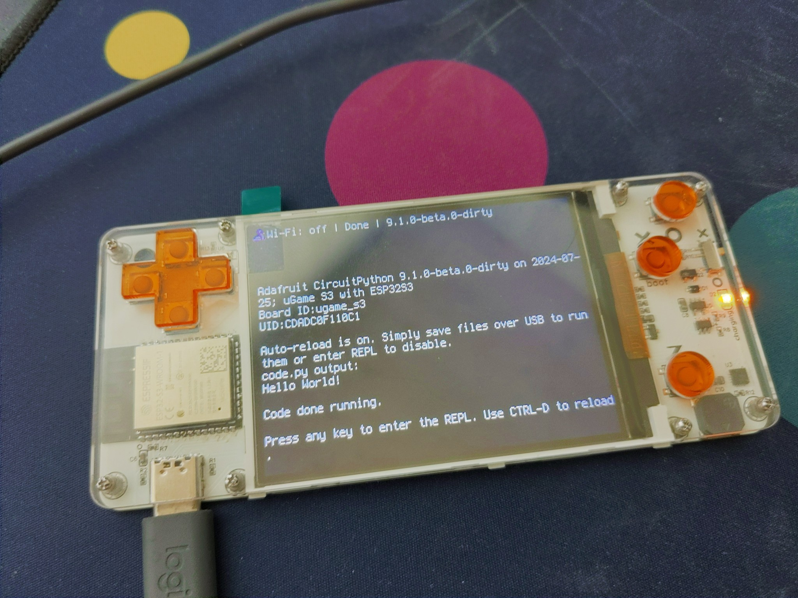
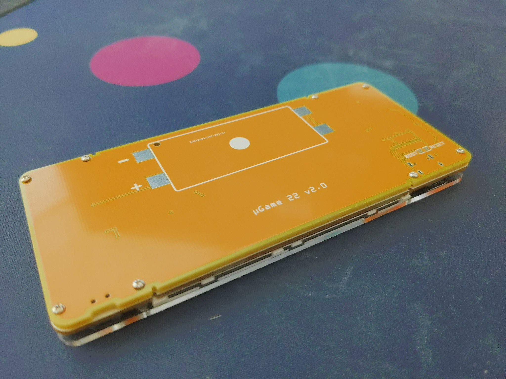

S3 with a Module¶
Published on 2024-07-25 in µGame S3.
I finally gave up on the parallel display. It seems that something in IDF is broken again, and since it’s broken now, even if it gets fixed, chances are that it will break again. I can instead stick to what is working reliably, especially since the ESP32 can do very fast SPI clocks, and that might be even faster than the parallel protocol.
In any case, I designed that board with a WROOM module, using the SPI display, a LiPo battery with a charging circuit, and a bunch of other extra features: backlight control, battery monitoring, a light sensor, and all the unused pins broken out to a connector on the back.
I assumed the popular Nokia BL-5C battery, but I also found some very thin (3mm) pouch batteries of the same size, so I’m going to use those in my prototypes. I still need to figure out some way to hold the battery in place, and maybe some pogo pins for the battery connector. For now it’s held by some masking tape.
I like the thin pouch battery, because it makes the whole console almost completely flat:
As for the software, there were no problems. I prepared a board definition for CircuitPython, with 16MB flash and 8MB of PSRAM, and the Stage library enabled. I even added the display initialization to the firmware. Flashing is easy, because the BOOT button is the X button, like in the previous version. It worked at the first try.
The power switch is only for the battery power — connecting the USB always turns the device on, and always charges the battery. It was easier to do it that way, though it might be annoying if you wanted to just charge it without switching it on.
As I said, I still don’t know how I will solve the battery cover. For now I attached the PCB of one of the old prototypes on the back, and that seems to work pretty well. I might do something similar in the final version.
I still have some nicer machine screws and washers on order – I should be able to control the spacing of the layers better with those.
I’m also still not entirely happy with the buttons and the d-pad. I want to experiment with 3D printing them, but for that I would have to refresh my OpenSCAD skills a bit, and possibly order a whole bunch of prototypes to be printed, since I don’t have a 3D printer myself. It might take a lot of back-and-forth to get the spacing right.